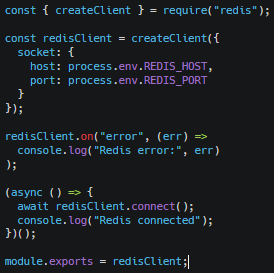
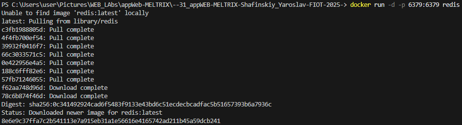
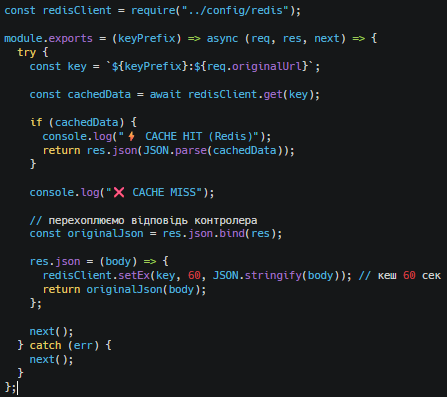
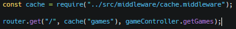
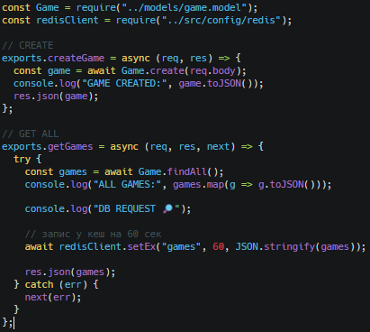
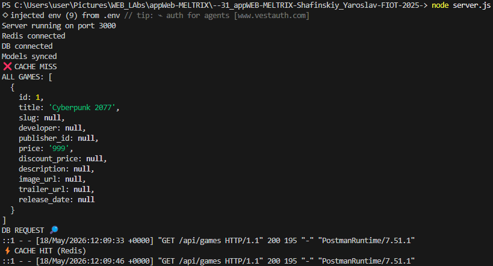

Зображення
Підключення до Redis
redis.js

Запуск Redis локально через Docker

Middleware кешування
cache.middleware.js

Кешуємо маршрут з іграми
game.routes.js

Переписуємо controller, щоб він сам записував кеш у Redis.
game.controller.js

Оптимізація одиного із маршрутів API + реалізація кешування відповідей за допомогою Redis
Зображення
